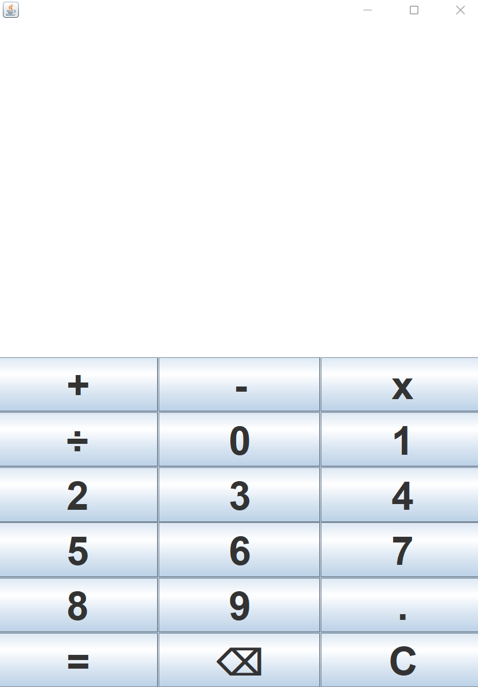

Calculadora simples criada em java utilizando o framework Swing
Funcional, porém não é 100% precisa e nem houve intenção de ser!

Qual o propósito?
O propósito foi conhecer um pouco mais sobre o framework Swing sem perder muito tempo.
Pois ele não é muito utlizado ultimamente, por conta disso a calculadora é básica e,
contém poucas possíbilidades de cálculo.
Caso deseje baixá-la ou ver o código fonte, acesse o link abaixo:
Link da calculadora no github